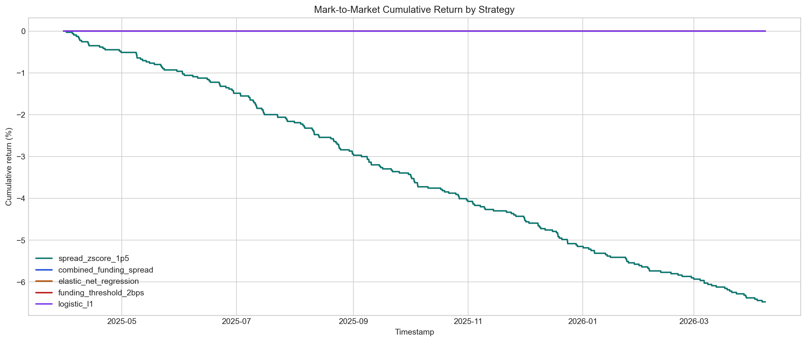

Canonical Hours
46,152
Aligned hourly research rows.
Final Report
Strict conclusion plus exploratory DL showcase summary.
Verdict
No positive post-cost out-of-sample strategy survives the current friction model, but the repository now demonstrates a coherent research-to-vault prototype.
Canonical Hours
Aligned hourly research rows.
Funding Events
Observed settlements in the sample.
Best Baseline
Elastic-net test Pearson correlation.
Best Backtest
spread_zscore_1p5 with $-6,474.85 net PnL.
Dataset
Modeling
| Family | Model | Metric | Score | RMSE | Signals |
|---|---|---|---|---|---|
| Best baseline | elastic_net_regression | pearson_corr | 0.677 | 1.269 | 0 |
| Best deep learning | transformer_encoder | pearson_corr | 0.646 | 1.209 | 0 |
Backtest
| Strategy | Source | Split | Status | Trades | Cum Return | MTM Drawdown | MTM Sharpe | Net PnL | Reason |
|---|---|---|---|---|---|---|---|---|---|
| spread_zscore_1p5 | rule_based | test | completed | 200 | -6.47% | -6.47% | -14.072 | $-6,474.85 | |
| combined_funding_spread | rule_based | test | no_tradable_signals | 0 | 0.00% | n/a | n/a | $0.00 | test: signal_count == 0 for split 'test'. |
| elastic_net_regression | baseline_linear | test | no_tradable_signals | 0 | 0.00% | n/a | n/a | $0.00 | validation: signal_count == 0 for split 'validation'.; test: signal_count == 0 for split 'test'. |
| funding_threshold_2bps | rule_based | test | no_tradable_signals | 0 | 0.00% | n/a | n/a | $0.00 | test: signal_count == 0 for split 'test'. |
| logistic_l1 | baseline_linear | test | no_tradable_signals | 0 | 0.00% | n/a | n/a | $0.00 | test: signal_count == 0 for split 'test'. |
Primary split: test. Assumptions remain explicit and prototype-scoped.
Robustness
| Family | Representative Strategy | Trades | Cum Return | Sharpe | Net PnL |
|---|---|---|---|---|---|
| Simple ML Baseline | elastic_net_regression | 0 | 0.00% | nan | $0.00 |
| Deep Learning | transformer_encoder | 0 | 0.00% | nan | $0.00 |
| Rule-Based Baseline | spread_zscore_1p5 | 200 | -6.47% | -14.072 | $-6,474.85 |
Exploratory
Exploratory DL results are supplementary showcase results designed to demonstrate model learning behavior, ranking ability, and alternative opportunity definitions. They do not replace the strict post-cost primary conclusion.
| Strategy | Model | Target | Signal Rule | Split | Trades | Cum Return | MTM Sharpe | Net PnL | Status | Reason |
|---|---|---|---|---|---|---|---|---|---|---|
| lstm_gross__rolling_top_decile_abs | lstm | gross_opportunity_regression | rolling_top_decile_abs | test | 578 | -18.79% | -24.180 | $-18,791.33 | completed | None |
Vault
Figures
data
Hourly funding history shows persistent positive funding with episodic spikes and reversals.

data
Basis dislocations stay small on average but widen during stress and short-lived directional bursts.

backtest
The explicit delta-neutral backtest makes the ranking between rule-based, baseline ML, and learned models easy to explain.

backtest
Even prototype strategies need a clear view of path dependence and downside depth.

robustness
Rule-based, simple ML, and deep learning outputs are compared under one shared evaluation lens.

models
Phase 2 compares LSTM, GRU, TCN, and TransformerEncoder under one shared regression task.

models
The same sequence models are ranked again using a trading-oriented signal-return metric.

Conclusion
Contributions
Limitations
Future Work